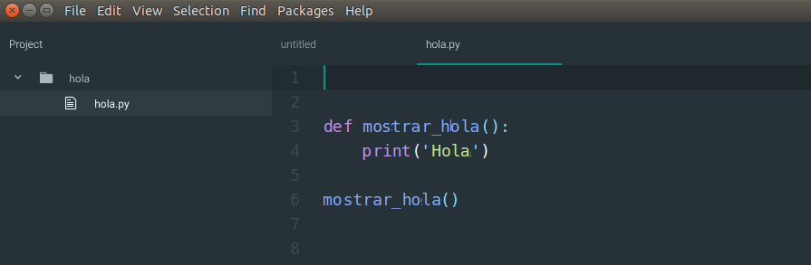
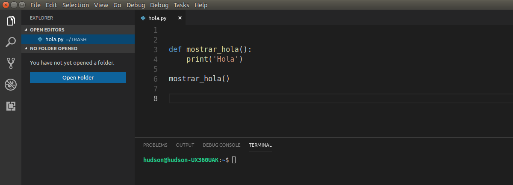
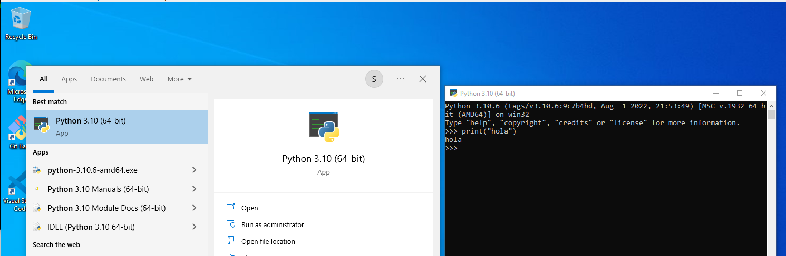
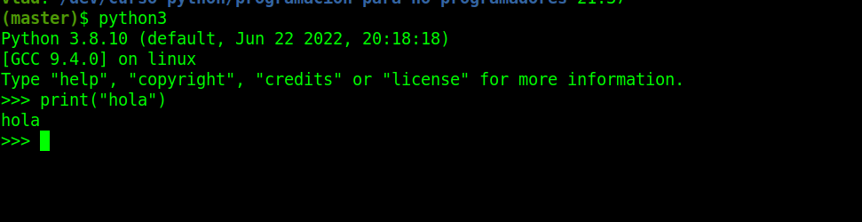

¿Donde escribimos nuestro código?
Como dijimos programar es escribir instrucciones (las denominaremos código o código fuente). Para esto podríamos usar algún software de edición de texto pero existen herramientas específicas para esta tarea.
Visual Studio (de Microsoft)
A estos entornos de trabajo se los conoce Entornos de desarrollo Integrado o IDE por sus siglas en inglés (Integrated Development Environment). Estas herramientas proveen funcionalidades que simplifican el trabajo de un programador.
Es también posible ejecutar código Python línea a línea con la consola interactiva de Python.
 La consola interactiva nos permite escribir código Python al mismo tiempo que se ejecuta. Es ideal para probar pequeñas porciones de código. Una vez que la cerramos, todo lo que hemos escrito se pierde.